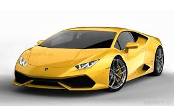
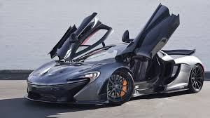

| Fav cars | ||
|---|---|---|
| The Lamborghini Huracán (Spanish for "hurricane"; [uɾaˈkan]) is a sports car built by Lamborghini, replacing Lamborghini's sales leader and most produced car, the Gallardo.[1] The Huracán made its auto show debut at the March 2014 Geneva Auto Show,[2] and was released in the second quarter of 2014. The name of the Huracan LP 610-4 comes from the fact that this car has 610 horsepower and 4 wheel drive. The Huracán was named "The Supercar of the Year 2014" by car magazine Top Gear[3]. |  | |
| The Porsche 918 Spyder is a mid-engined plug-in hybrid sports car by Porsche.[3] The Spyder is powered by a naturally aspirated 4.6-litre V8 engine, developing 608 metric horsepower (447 kW), with two electric motors delivering an additional 279 metric horsepower (205 kW) for a combined output of 887 metric horsepower (652 kW). The 918 Spyder's 6.8 kWh lithium-ion battery pack delivers an all-electric range of 19 km (12 mi) under EPA's five-cycle tests.[1] The car has a top speed of around 340 km/h (210 mph).[4] The 918 Spyder is a limited edition Hypercar, with 918 units manufactured and sold as a 2014 model year. Production began on September 18, 2013, with deliveries initially scheduled to begin in December 2013.[5][6] The starting price was US$847,000.[4] The 918 Spyder was sold out in December 2014. The country with the most orders was the United States with 294 units.[7][8] Canada ordered 35 units.[9] Production ended in June 2015.[10] The 918 Spyder was first shown as a concept at the 80th Geneva Motor Show in March 2010.[5] The production version was unveiled at the September 2013 Frankfurt Motor Show.[11] Porsche also unveiled the RSR racing variant of the 918 at the 2011 North American International Auto Show, which combines hybrid technology first used in the 997 GT3 R Hybrid, with styling from the 918 Spyder.[12] The 918 Spyder was the second plug-in hybrid car from Porsche, after the 2014 Panamera S E-Hybrid.[13] | | |
| The McLaren P1 is a British limited-production plug-in hybrid sports car produced by McLaren. The concept car was capable of reaching speeds of 218 mph (351 km/h) with the limiter on. Debuted at the 2012 Paris Motor Show,[4] retail began in the UK in October 2013 and[5] all 375 units were sold out by November.[6] Production ended in December 2015.[7] The United States accounted for 34% of the units and Europe for 26%.[7] It was considered to be the successor to the F1, utilizing hybrid power and Formula 1 technology, but did not have the same three seat layout as its predecessor. Like the F1, the P1 is a mid-engine, rear wheel drive design that used a carbon fibre monocoque and roof structure safety cage concept called MonoCage, which is a development of the MonoCell first used in the MP4-12C and then in subsequent models. Its main competitors were the LaFerrari and the Porsche 918. They are all similar in specifications and performance, and in a race round Silverstone circuit they were all within a second of each other, the P1 finishing first at 58.24 sec and the LaFerrari finishing at 58.58 sec; the Porsche was in-between with 58.46 sec.[8] A track version of the P1, the P1 GTR, was unveiled at the 2015 Geneva Motor Show. Production of the GTR was limited to 58 cars. The McLaren P1 is also one of the main rivals going against the Porsche 918 Spyder, and the Ferrari LaFerrari. |  |